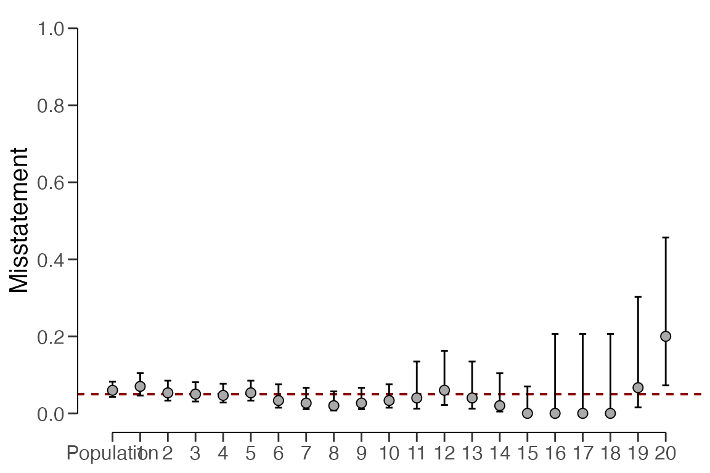

Evaluating statistical audit samples
Koen Derks
2023-11-30
Source:vignettes/sample-evaluation.Rmd
sample-evaluation.RmdIntroduction
This vignette demonstrates how to evaluate a sample with the
evaluation() function from the jfa
package.

In auditing, the goal of the evaluation is typically to estimate the misstatement in the population based on a sample, or to test the misstatement in the population against a critical upper limit, referred to as the performance materiality.
Required information
Evaluating an audit sample using the evaluation()
function requires that the sample data is available in one of two
forms:
-
Summary statistics: This includes (a vector of) the
number of items (
n), (a vector of) the sum of errors / taints (x) and optionally (a vector of) the number of units in the population (N.units). -
Data: A
data.framecontaining a numeric column with book values (values), a numeric column with audit (true) values (values.audit) and optionally a factor column indicating stratum membership (strata).
By default, evaluation() estimates the population
misstatement and returns a point estimate as well as a
(conf.level \(\times\)
100) percent confidence / credible interval around this estimate.
However, in audit sampling, the population is typically subject to a
certain maximum tolerable misstatement defined by the performance
materiality \(\theta_{max}\). Using the
materiality argument, you can provide this critical value
to the evaluation() function as a fraction. In addition to
the estimation that is performed by default, specifying
materiality triggers the comparison of two competing
hypotheses. Which hypotheses are being compared depends on the input for
the alternative argument:
-
alternative = "less"(default): \(H_1:\theta<\theta_{max}\) versus \(H_0:\theta\geq\theta_{max}\) -
alternative = "greater": \(H_1:\theta>\theta_{max}\) versus \(H_0:\theta\leq\theta_{max}\) -
alternative = "two.sided": \(H_1:\theta \neq\theta_{max}\) versus \(H_0:\theta=\theta_{max}\)
Evaluation using summary statistics
Non-stratified samples
In a non-stratified sampling procedure, the auditor does not take samples from different strata or subgroups in a population. An example of such a situation would be where the auditor is auditing the general ledger of a small business.
Classical evaluation
Classical hypothesis testing uses the p-value to make a decision about whether to reject the hypothesis \(H_0\) or not. As an example, consider that an auditor wants to verify whether the population contains less than 5 percent misstatement, implying the hypotheses \(H_1:\theta<0.05\) and \(H_0:\theta\geq0.05\). They have taken a sample of 100 items, of which 1 contained an error. They set the significance level for the p-value to 0.05, implying that \(p < 0.05\) will be enough to reject the hypothesis \(H_0\). The call below evaluates the sample using a classical non-stratified evaluation procedure (Stewart, 2012).
evaluation(materiality = 0.05, x = 1, n = 100)##
## Classical Audit Sample Evaluation
##
## data: 1 and 100
## number of errors = 1, number of samples = 100, taint = 1, p-value =
## 0.040428
## alternative hypothesis: true misstatement rate is less than 0.05
## 95 percent confidence interval:
## 0.00000000 0.04743865
## most likely estimate:
## 0.01
## results obtained via method 'poisson'The output shows that the most likely error in the population is estimated to be 1 / 100 = 1 percent and that the 95 percent (one-sided) confidence interval ranges from 0 percent to 4.74 percent. The output also shows that the p-value is lower than 0.05 implying that the hypothesis \(H_0\) can be rejected. Hence, the auditor is able to conclude that the sample provides sufficient evidence to state with reasonable assurance that the population does not contain material misstatement.
Bayesian evaluation
Bayesian hypothesis testing uses the Bayes factor, \(BF_{10}\) or \(BF_{01}\), to make a statement about the
evidence provided by the sample in support for one of the two hypotheses
\(H_1\) or \(H_0\) (Derks, Swart,
Wagenmakers, et al., 2021). As an example of how to interpret the
Bayes factor, the value of \(BF_{10} =
10\) (provided by the evaluation() function) can be
interpreted as: the data are 10 times more likely to have occurred
under the hypothesis \(H_1\) than under
the hypothesis \(H_0\). \(BF_{10} > 1\) indicates evidence in
favor of \(H_1\) and against \(H_0\), while \(BF_{10} < 1\) indicates evidence in
favor of \(H_0\) and against \(H_1\). The evaluation()
function returns the value for \(BF_{10}\), but \(BF_{01}\) can be computed as \(\frac{1}{BF_{10}}\).
Consider the previous example of an auditor who wants to verify whether the population contains less than 5 percent misstatement, implying the hypotheses \(H_1:\theta<0.05\) and \(H_0:\theta\geq0.05\). They have taken a sample of 100 items, of which 1 was found to contain a misstatement. The prior distribution is assumed to be a default beta(1,1) prior. The call below evaluates the sample using a Bayesian non-stratified evaluation procedure (Derks, Swart, Batenburg, et al., 2021; Stewart, 2013).
evaluation(materiality = 0.05, x = 1, n = 100, method = "binomial", prior = TRUE)##
## Bayesian Audit Sample Evaluation
##
## data: 1 and 100
## number of errors = 1, number of samples = 100, taint = 1, BF₁₀ = 515.86
## alternative hypothesis: true misstatement rate is less than 0.05
## 95 percent credible interval:
## 0.00000000 0.04610735
## most likely estimate:
## 0.01
## results obtained via method 'binomial' + 'prior'The output shows that the most likely error in the population is
estimated to be 1 / 100 = 1 percent and that the 95 percent (one-sided)
credible interval ranges from 0 percent to 4.61 percent. The small
difference between the classical and default Bayesian results is due to
the prior distribution, which must be proper in order to calculate a
Bayes factor (classical results can be emulated by constructing a prior
with method = "strict" in the auditPrior()
function). The Bayes factor in this case is shown to be \(BF_{10}=515\), meaning that the data from
the sample are about 515 times more likely to occur under the hypothesis
of tolerable misstatement than under the hypothesis of material
misstatement.
Note that this is a very high Bayes factor for the little data that
is observed. That is because the Bayes factor is dependent on the prior
distribution for \(\theta\). As a rule
of thumb, when the prior distribution is highly conservative (as with
method = 'default') with respect to the hypothesis of
tolerable misstatement, the Bayes factor tends to over quantify the
evidence in favor of this hypothesis. You can mitigate this dependency
by using a prior distribution that is impartial with respect to the
hypotheses via method = "impartial" in the
auditPrior() function (Derks et al.,
2022a).
prior <- auditPrior(materiality = 0.05, method = "impartial", likelihood = "binomial")
evaluation(materiality = 0.05, x = 1, n = 100, prior = prior)##
## Bayesian Audit Sample Evaluation
##
## data: 1 and 100
## number of errors = 1, number of samples = 100, taint = 1, BF₁₀ = 47.435
## alternative hypothesis: true misstatement rate is less than 0.05
## 95 percent credible interval:
## 0.00000000 0.04110834
## most likely estimate:
## 0.0088878
## results obtained via method 'binomial' + 'prior'The output shows that \(BF_{10}=47\), implying that under the assumption of impartiality there is strong evidence for \(H_1\), the hypothesis that the population contains misstatements lower than 5 percent of the population (tolerable misstatement). Since the two prior distributions both resulted in convincing Bayes factors, the results can be considered robust to the choice of prior distribution. Hence, the auditor is able to conclude that the sample provides convincing evidence to state that the population does not contain material misstatement.
Stratified samples
In a stratified sampling procedure, the auditor takes samples from different strata (or subgroups) in a population. An example of such a situation would be a group audit where the audited organization consists of different components or branches. Stratification is relevant for the group auditor if they must form an opinion on the group as a whole because they must aggregate the samples taken by the component auditors.
As a data example, consider the retailer data set that
comes with the package. The organization in question consists of 20
branches across the country. In each of the 20 strata, a component
auditor has taken a statistical sample and reported the outcomes to the
group auditor.
## stratum items samples errors
## 1 1 5000 300 21
## 2 2 5000 300 16
## 3 3 5000 300 15
## 4 4 5000 300 14
## 5 5 5000 300 16
## 6 6 5000 150 5
## 7 7 5000 150 4
## 8 8 5000 150 3
## 9 9 5000 150 4
## 10 10 5000 150 5
## 11 11 10000 50 2
## 12 12 10000 50 3
## 13 13 10000 50 2
## 14 14 10000 50 1
## 15 15 10000 50 0
## 16 16 10000 15 0
## 17 17 10000 15 0
## 18 18 10000 15 0
## 19 19 10000 15 1
## 20 20 4000 15 3In general, there are three approaches to evaluating a stratified
sample: no pooling, complete pooling, and partial pooling (see Derks et al., 2022b). When using
evaluation(), you must to indicate which type of pooling to
use via the pooling argument. No pooling assumes no
similarities between strata, which means that all strata are analyzed
independently. Complete pooling assumes no difference between strata,
which means that all data is aggregated and analyzed as a whole.
Finally, partial pooling assumes differences and similarities between
strata, which means that information can be shared between strata.
Partial pooling (i.e., multilevel/hierarchical modeling) is a powerful
technique that can result in more efficient population and stratum
estimates but is currently only feasible when performing a Bayesian
analysis. For this reason, this vignette only describes the Bayesian
approach to stratified evaluation but going from this approach to a
classical approach only requires setting prior = FALSE.
The number of units per stratum in the population can be provided
with N.units to weigh the stratum estimates to determine
population estimate. This is called poststratification. If
N.units is not specified, each stratum is assumed to be
equally represented in the population.
Approach 1: No pooling
No pooling (pooling = "none", default) assumes no
similarities between strata. This means that the prior distribution
specified through prior is applied independently for each
stratum. This allows for independent estimates for the misstatement in
each stratum but also results in a relatively high uncertainty in the
population estimate. The call below evaluates the sample using a
Bayesian stratified evaluation procedure, in which the stratum estimates
are poststratified to arrive at the population estimate.
set.seed(1) # Important because the posterior distribution is determined via sampling
result_np <- evaluation(
materiality = 0.05, method = "binomial", prior = TRUE,
n = retailer$samples, x = retailer$errors, N.units = retailer$items,
alternative = "two.sided", pooling = "none"
)
summary(result_np)##
## Bayesian Audit Sample Evaluation Summary
##
## Options:
## Confidence level: 0.95
## Population size: 144000
## Materiality: 0.05
## Hypotheses: H₀: Θ = 0.05 vs. H₁: Θ ≠ 0.05
## Method: binomial
## Prior distribution: Nonparametric
##
## Data:
## Sample size: 2575
## Number of errors: 115
## Sum of taints: 115
##
## Results:
## Posterior distribution: Nonparametric
## Most likely error: 0.0598
## 95 percent credible interval: [0.042763, 0.082201]
## Precision: 0.022401
## BF₁₀: 0
##
## Strata (20):
## N n x t mle lb ub precision
## 1 5000 300 21 21 0.07000 0.04637 0.10467 0.03467
## 2 5000 300 16 16 0.05333 0.03324 0.08489 0.03156
## 3 5000 300 15 15 0.05000 0.03069 0.08086 0.03086
## 4 5000 300 14 14 0.04667 0.02816 0.07681 0.03014
## 5 5000 300 16 16 0.05333 0.03324 0.08489 0.03156
## 6 5000 150 5 5 0.03333 0.01472 0.07558 0.04225
## 7 5000 150 4 4 0.02667 0.01084 0.06643 0.03977
## 8 5000 150 3 3 0.02000 0.00726 0.05696 0.03696
## 9 5000 150 4 4 0.02667 0.01084 0.06643 0.03977
## 10 5000 150 5 5 0.03333 0.01472 0.07558 0.04225
## 11 10000 50 2 2 0.04000 0.01230 0.13459 0.09459
## 12 10000 50 3 3 0.06000 0.02178 0.16242 0.10242
## 13 10000 50 2 2 0.04000 0.01230 0.13459 0.09459
## 14 10000 50 1 1 0.02000 0.00478 0.10447 0.08447
## 15 10000 50 0 0 0.00000 0.00050 0.06978 0.06978
## 16 10000 15 0 0 0.00000 0.00158 0.20591 0.20591
## 17 10000 15 0 0 0.00000 0.00158 0.20591 0.20591
## 18 10000 15 0 0 0.00000 0.00158 0.20591 0.20591
## 19 10000 15 1 1 0.06667 0.01551 0.30232 0.23565
## 20 4000 15 3 3 0.20000 0.07266 0.45646 0.25646In this case, the output of the summary() function shows
that the estimate of the misstatement in the population is 5.85 percent,
with the 95 percent credible interval ranging from 4.28 percent to 8.22
percent. The stratum estimates differ substantially from each other but
are relatively uncertain.
plot(result_np, type = "estimates")
The prior and posterior distribution for the population misstatement
can be requested via the plot() function.
plot(result_np, type = "posterior")
Approach 2: Complete pooling
Complete pooling (pooling = "complete") assumes no
differences between strata. This has the advantages that data from all
strata can be aggregated, which decreases the uncertainty in the
population estimate compared to the no pooling approach. However, the
disadvantage of this approach is that it does not facilitate the
distinction between between strata, as every stratum receives the same
estimate equal to that of the population. The call below evaluates the
sample using a Bayesian stratified evaluation procedure, in which the
strata are assumed to be the same.
result_cp <- evaluation(
materiality = 0.05, method = "binomial", prior = TRUE,
n = retailer$samples, x = retailer$errors, N.units = retailer$items,
alternative = "two.sided", pooling = "complete"
)
summary(result_cp)##
## Bayesian Audit Sample Evaluation Summary
##
## Options:
## Confidence level: 0.95
## Population size: 144000
## Materiality: 0.05
## Hypotheses: H₀: Θ = 0.05 vs. H₁: Θ ≠ 0.05
## Method: binomial
## Prior distribution: beta(α = 1, β = 1)
##
## Data:
## Sample size: 2575
## Number of errors: 115
## Sum of taints: 115
##
## Results:
## Posterior distribution: beta(α = 116, β = 2461)
## Most likely error: 0.04466
## 95 percent credible interval: [0.03735, 0.053345]
## Precision: 0.0086852
## BF₁₀: 0.022725
##
## Strata (20):
## N n x t mle lb ub precision bf10
## 1 5000 300 21 21 0.04466 0.03735 0.05335 0.00869 0.02273
## 2 5000 300 16 16 0.04466 0.03735 0.05335 0.00869 0.02273
## 3 5000 300 15 15 0.04466 0.03735 0.05335 0.00869 0.02273
## 4 5000 300 14 14 0.04466 0.03735 0.05335 0.00869 0.02273
## 5 5000 300 16 16 0.04466 0.03735 0.05335 0.00869 0.02273
## 6 5000 150 5 5 0.04466 0.03735 0.05335 0.00869 0.02273
## 7 5000 150 4 4 0.04466 0.03735 0.05335 0.00869 0.02273
## 8 5000 150 3 3 0.04466 0.03735 0.05335 0.00869 0.02273
## 9 5000 150 4 4 0.04466 0.03735 0.05335 0.00869 0.02273
## 10 5000 150 5 5 0.04466 0.03735 0.05335 0.00869 0.02273
## 11 10000 50 2 2 0.04466 0.03735 0.05335 0.00869 0.02273
## 12 10000 50 3 3 0.04466 0.03735 0.05335 0.00869 0.02273
## 13 10000 50 2 2 0.04466 0.03735 0.05335 0.00869 0.02273
## 14 10000 50 1 1 0.04466 0.03735 0.05335 0.00869 0.02273
## 15 10000 50 0 0 0.04466 0.03735 0.05335 0.00869 0.02273
## 16 10000 15 0 0 0.04466 0.03735 0.05335 0.00869 0.02273
## 17 10000 15 0 0 0.04466 0.03735 0.05335 0.00869 0.02273
## 18 10000 15 0 0 0.04466 0.03735 0.05335 0.00869 0.02273
## 19 10000 15 1 1 0.04466 0.03735 0.05335 0.00869 0.02273
## 20 4000 15 3 3 0.04466 0.03735 0.05335 0.00869 0.02273For example, the output of the summary() function shows
that the estimate of the misstatement in the population is 4.47 percent,
with the 95 percent credible interval ranging from 3.74 percent to 5.33
percent. Since the data is aggregated, the stratum estimates contain
relatively little uncertainty. However, the probability of misstatement
in stratum 20 (many misstatements) under this assumption is the same as
that of stratum 15 (few misstatements).
plot(result_cp, type = "estimates")
The prior and posterior distribution for the population misstatement
can be requested via the plot() function.
plot(result_cp, type = "posterior")
Approach 3: Partial pooling
Finally, partial pooling (pooling = "partial") assumes
differences and similarities between strata. This allows the auditor to
differentiate between strata, while also sharing information between the
strata to reduce uncertainty in the population estimate. The call below
evaluates the sample using a Bayesian stratified evaluation procedure,
in which the stratum estimates are poststratified to arrive at the
population estimate.
set.seed(1) # Important because the posterior distribution is determined via sampling
result_pp <- evaluation(
materiality = 0.05, method = "binomial", prior = TRUE,
n = retailer$samples, x = retailer$errors, N.units = retailer$items,
alternative = "two.sided", pooling = "partial"
)
summary(result_pp)##
## Bayesian Audit Sample Evaluation Summary
##
## Options:
## Confidence level: 0.95
## Population size: 144000
## Materiality: 0.05
## Hypotheses: H₀: Θ = 0.05 vs. H₁: Θ ≠ 0.05
## Method: binomial
## Prior distribution: Nonparametric
##
## Data:
## Sample size: 2575
## Number of errors: 115
## Sum of taints: 115
##
## Results:
## Posterior distribution: Nonparametric
## Most likely error: 0.0408
## 95 percent credible interval: [0.032695, 0.053314]
## Precision: 0.012514
## BF₁₀: 0.046423
##
## Strata (20):
## N n x t mle lb ub precision
## 1 5000 300 21 21 0.0605 0.03949 0.08845 0.02795
## 2 5000 300 16 16 0.0464 0.03201 0.07198 0.02558
## 3 5000 300 15 15 0.0477 0.03024 0.07115 0.02345
## 4 5000 300 14 14 0.0420 0.02798 0.06680 0.02480
## 5 5000 300 16 16 0.0429 0.03181 0.07412 0.03122
## 6 5000 150 5 5 0.0369 0.01762 0.06279 0.02589
## 7 5000 150 4 4 0.0376 0.01495 0.05792 0.02032
## 8 5000 150 3 3 0.0290 0.01194 0.05522 0.02622
## 9 5000 150 4 4 0.0349 0.01477 0.05997 0.02507
## 10 5000 150 5 5 0.0393 0.01832 0.06369 0.02439
## 11 10000 50 2 2 0.0315 0.01709 0.08053 0.04903
## 12 10000 50 3 3 0.0465 0.02167 0.08881 0.04231
## 13 10000 50 2 2 0.0372 0.01679 0.08128 0.04408
## 14 10000 50 1 1 0.0428 0.01172 0.06965 0.02685
## 15 10000 50 0 0 0.0396 0.00557 0.06191 0.02231
## 16 10000 15 0 0 0.0401 0.00896 0.07797 0.03787
## 17 10000 15 0 0 0.0383 0.00854 0.07956 0.04126
## 18 10000 15 0 0 0.0323 0.00811 0.08168 0.04938
## 19 10000 15 1 1 0.0453 0.01630 0.09706 0.05176
## 20 4000 15 3 3 0.0455 0.02834 0.14270 0.09720In this case, the output shows that the estimate of the misstatement in the population is 4.34 percent, with the 95 percent credible interval ranging from 3.45 percent to 5.33 percent. Note that this population estimate is substantially less uncertain than that of the no pooling approach. Note that, like in the no pooling approach, the stratum estimates are different from each other but lie closer together and are less uncertain.
plot(result_pp, type = "estimates")
The prior and posterior distribution for the population misstatement
can be requested via the plot() function.
plot(result_pp, type = "posterior")
Evaluation using data
For this example, we take the allowances that set that
comes with the package. This data set contains 3500 financial statement
line items, each with a booked value bookValue and, for
illustrative purposes, and audited (true) value auditValue.
Since the focus of this vignette is the evaluation stage in the audit,
the sample is already indicated in the data set. The performance
materiality in this example is set to 5 percent.
## item branch bookValue auditValue times
## 1 1 12 1600 1600 1
## 2 2 12 1625 NA 0
## 3 3 12 1775 NA 0
## 4 4 12 1250 1250 1
## 5 5 12 1400 NA 0
## 6 6 12 1190 NA 0Non-stratified samples
Evaluating a non-stratified sample using data requires specification
of the data, values and
values.audit arguments. The input for these arguments is
the name of the specific column in data.
Classical evaluation
The call below evaluates the allowances sample using a
classical non-stratified evaluation procedure.
x <- evaluation(
materiality = 0.05, data = allowances,
values = "bookValue", values.audit = "auditValue", times = "times"
)
summary(x)##
## Classical Audit Sample Evaluation Summary
##
## Options:
## Confidence level: 0.95
## Materiality: 0.05
## Hypotheses: H₀: Θ >= 0.05 vs. H₁: Θ < 0.05
## Method: poisson
##
## Data:
## Sample size: 1604
## Number of errors: 401
## Sum of taints: 252.9281046
##
## Results:
## Most likely error: 0.15769
## 95 percent confidence interval: [0, 0.175]
## Precision: 0.017311
## p-value: 1In this case, the output shows that the estimate of the misstatement in the population is 15.77 percent, with the 95 percent (one-sided) confidence interval ranging from 0 percent to 17.5 percent.
Bayesian evaluation
The call below evaluates the allowances sample using a
Bayesian non-stratified evaluation procedure.
x <- evaluation(
materiality = 0.05, data = allowances, prior = TRUE,
values = "bookValue", values.audit = "auditValue", times = "times"
)
summary(x)##
## Bayesian Audit Sample Evaluation Summary
##
## Options:
## Confidence level: 0.95
## Materiality: 0.05
## Hypotheses: H₀: Θ > 0.05 vs. H₁: Θ < 0.05
## Method: poisson
## Prior distribution: gamma(α = 1, β = 1)
##
## Data:
## Sample size: 1604
## Number of errors: 401
## Sum of taints: 252.9281046
##
## Results:
## Posterior distribution: gamma(α = 253.928, β = 1605)
## Most likely error: 0.15759
## 95 percent credible interval: [0, 0.17489]
## Precision: 0.0173
## BF₁₀: 0The output shows that the estimate of the misstatement in the population is 15.76 percent, with the 95 percent (one-sided) credible interval ranging from 0 percent to 17.49 percent.
Stratified samples
Evaluating a stratified sample using data requires specification of
the data, values, values.audit
and strata arguments in the evaluation()
function. In this case, the units are monetary and calculated by
aggregating the book values of the items in each stratum.
Classical evaluation
The call below evaluates the allowances sample using a
classical stratified evaluation procedure, in which the stratum
estimates are poststratified to arrive at the population estimate.
x <- evaluation(
materiality = 0.05, data = allowances,
values = "bookValue", values.audit = "auditValue", strata = "branch", times = "times",
alternative = "two.sided", N.units = N.units
)
summary(x)##
## Classical Audit Sample Evaluation Summary
##
## Options:
## Confidence level: 0.95
## Population size: 16772249
## Materiality: 0.05
## Hypotheses: H₀: Θ = 0.05 vs. H₁: Θ ≠ 0.05
## Method: poisson
##
## Data:
## Sample size: 1604
## Number of errors: 401
## Sum of taints: 252.9281046
##
## Results:
## Most likely error: 0.14723
## 95 percent confidence interval: [0.12549, 0.18239]
## Precision: 0.03516
## p-value: NA
##
## Strata (16):
## N n x t mle lb ub precision p.value
## 1 317200.09 87 6 1.27814 0.01469 0.00073 0.06950 0.05481 0.46285
## 2 2792814.33 305 233 193.23313 0.63355 0.54558 0.72945 0.09590 0.00000
## 3 1144231.69 55 3 3.00000 0.05455 0.01105 0.15940 0.10486 0.75827
## 4 414202.89 70 45 15.05094 0.21501 0.11878 0.35434 0.13933 0.00000
## 5 96660.53 18 1 0.64537 0.03585 0.00015 0.27456 0.23871 0.59343
## 6 348006.13 34 1 0.17866 0.00525 0.00000 0.11926 0.11401 1.00000
## 7 2384079.33 55 14 9.44448 0.17172 0.07885 0.32122 0.14950 0.00058
## 8 1840399.33 96 1 0.00813 0.00008 0.00000 0.03860 0.03852 0.10355
## 9 563957.70 92 0 0.00000 0.00000 0.00000 0.04010 0.04010 0.01783
## 10 3198877.73 201 7 0.92023 0.00458 0.00009 0.02703 0.02245 0.00122
## 11 1983299.06 128 7 1.50034 0.01172 0.00084 0.05013 0.03841 0.10773
## 12 319144.13 86 5 1.68141 0.01955 0.00174 0.07806 0.05851 0.46069
## 13 148905.79 25 0 0.00000 0.00000 0.00000 0.14756 0.14756 0.64187
## 14 513058.76 150 0 0.00000 0.00000 0.00000 0.02459 0.02459 0.00134
## 15 432007.61 150 39 21.80000 0.14533 0.09026 0.22045 0.07511 0.00001
## 16 275403.70 52 39 4.18726 0.08052 0.02237 0.20215 0.12163 0.12258In this case, the output shows that the estimate of the misstatement
in the population is 14.72 percent, with the 95 percent confidence
interval ranging from 12.55 percent to 18.26 percent. The precision of
the population estimate is 3.54 percent. The stratum estimates can be
seen in the output of the summary() function and are
visualized below.
plot(x, type = "estimates")
Bayesian evaluation
Bayesian inference can improve upon the estimates of the classical
approach by pooling information between strata where possible. The call
below evaluates the allowances sample using a Bayesian
stratified evaluation procedure, in which the stratum estimates are
poststratified to arrive at the population estimate.
x <- evaluation(
materiality = 0.05, data = allowances, prior = TRUE,
values = "bookValue", values.audit = "auditValue", strata = "branch", times = "times",
alternative = "two.sided", N.units = N.units
)
summary(x)##
## Bayesian Audit Sample Evaluation Summary
##
## Options:
## Confidence level: 0.95
## Population size: 16772249
## Materiality: 0.05
## Hypotheses: H₀: Θ = 0.05 vs. H₁: Θ ≠ 0.05
## Method: poisson
## Prior distribution: Nonparametric
##
## Data:
## Sample size: 1604
## Number of errors: 401
## Sum of taints: 252.9281046
##
## Results:
## Posterior distribution: Nonparametric
## Most likely error: 0.1558
## 95 percent credible interval: [0.13473, 0.1813]
## Precision: 0.025505
## BF₁₀: NaN
##
## Strata (16):
## N n x t mle lb ub precision
## 1 317200.09 87 6 1.27814 0.01452 0.00380 0.06871 0.05419
## 2 2792814.33 305 233 193.23313 0.63148 0.54862 0.72707 0.09559
## 3 1144231.69 55 3 3.00000 0.05357 0.01946 0.15656 0.10299
## 4 414202.89 70 45 15.05094 0.21199 0.12935 0.34935 0.13736
## 5 96660.53 18 1 0.64537 0.03397 0.00749 0.26011 0.22614
## 6 348006.13 34 1 0.17866 0.00510 0.00137 0.11585 0.11075
## 7 2384079.33 55 14 9.44448 0.16865 0.09112 0.31548 0.14683
## 8 1840399.33 96 1 0.00813 0.00008 0.00027 0.03821 0.03812
## 9 563957.70 92 0 0.00000 0.00000 0.00027 0.03967 0.03967
## 10 3198877.73 201 7 0.92023 0.00456 0.00108 0.02689 0.02234
## 11 1983299.06 128 7 1.50034 0.01163 0.00322 0.04974 0.03811
## 12 319144.13 86 5 1.68141 0.01933 0.00559 0.07716 0.05784
## 13 148905.79 25 0 0.00000 0.00000 0.00097 0.14188 0.14188
## 14 513058.76 150 0 0.00000 0.00000 0.00017 0.02443 0.02443
## 15 432007.61 150 39 21.80000 0.14437 0.09550 0.21899 0.07462
## 16 275403.70 52 39 4.18726 0.07900 0.03262 0.19834 0.11933The output shows that the estimate of the misstatement in the
population is 15.66 percent, with the 95 percent credible interval
ranging from 14.59 percent to 17 percent. The precision of the
population estimate is 1.34 percent, which is substantially lower than
that of the classical approach. The stratum estimates can be seen in the
output of the summary() function and are visualized
below.
plot(x, type = "estimates")
The prior and posterior distribution for the population misstatement
can be requested via the plot() function.
plot(x, type = "posterior")